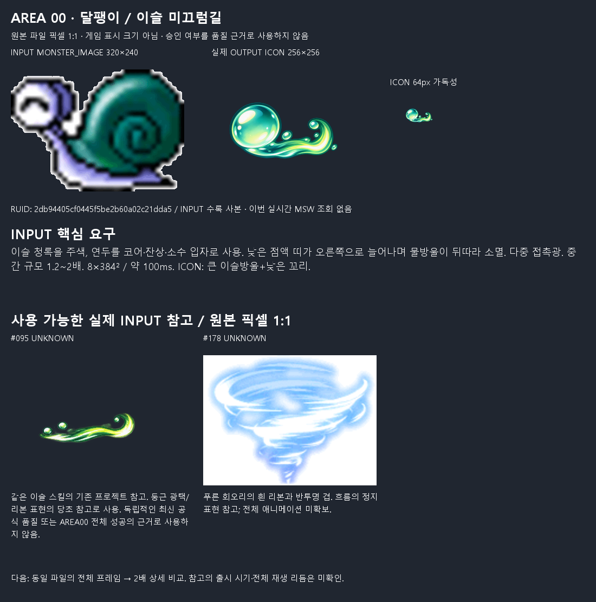
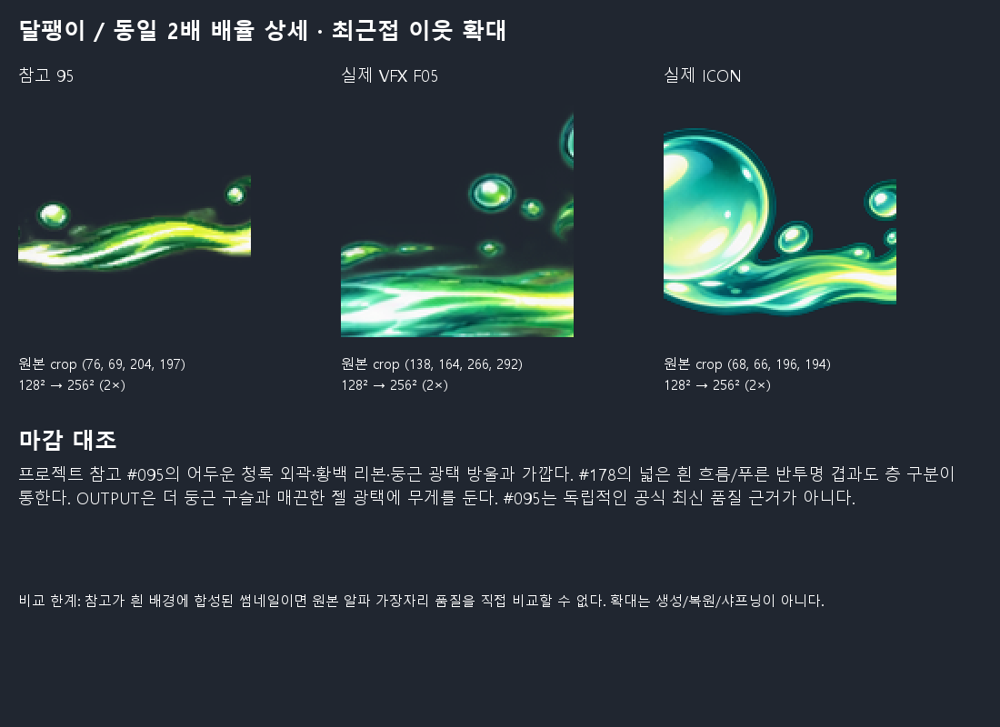
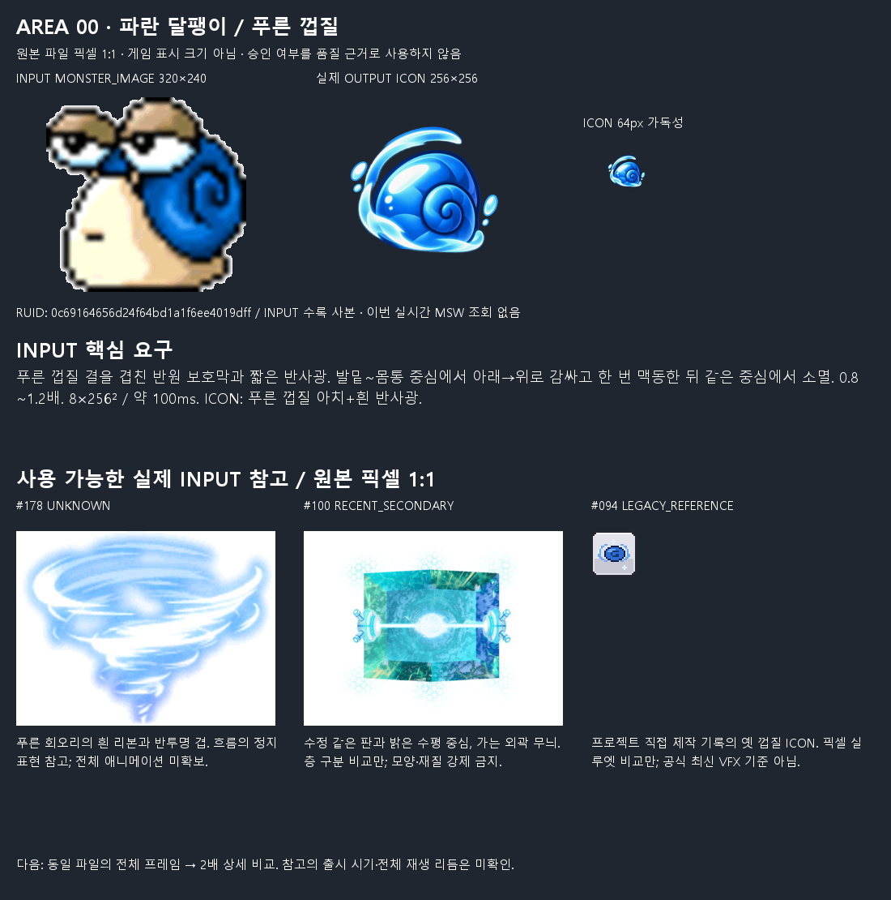
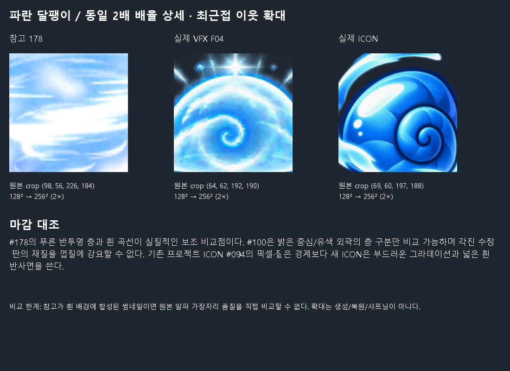
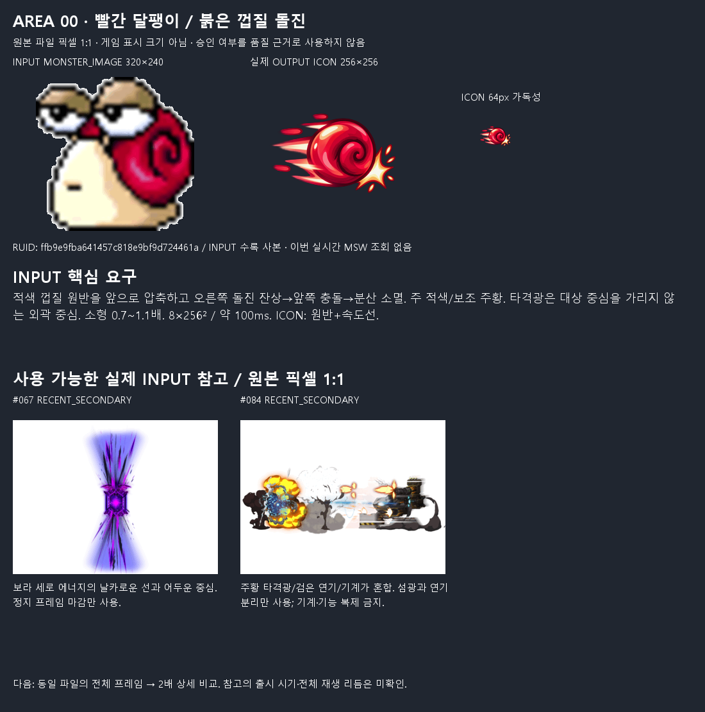
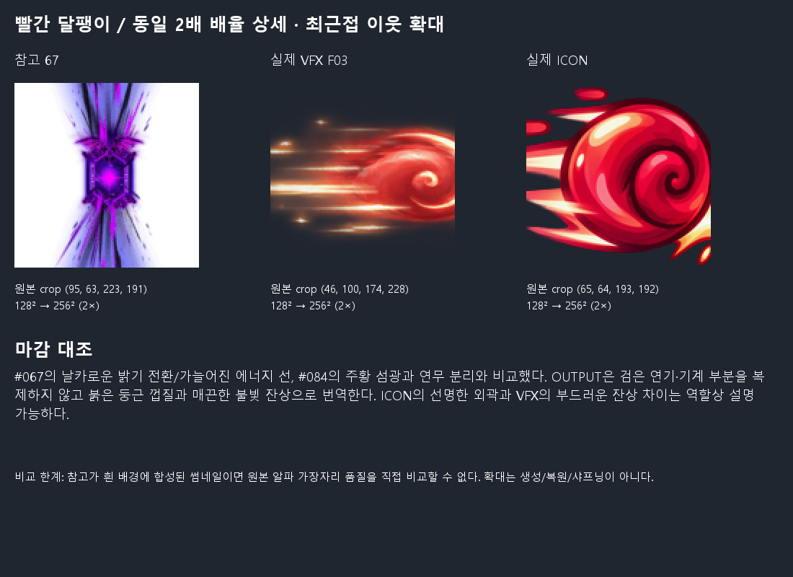
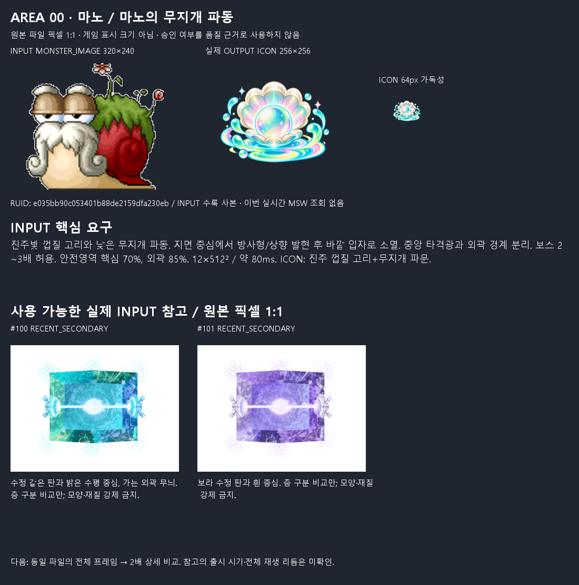
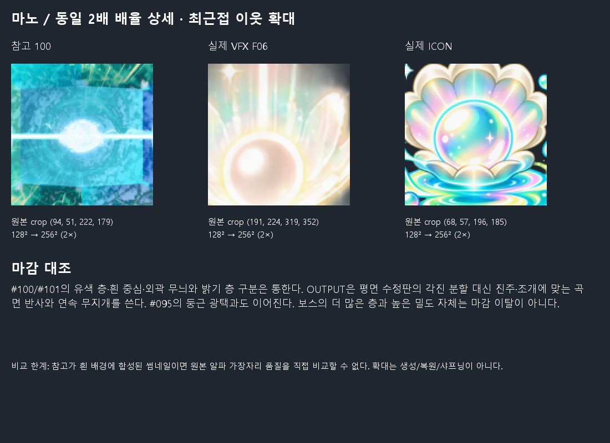
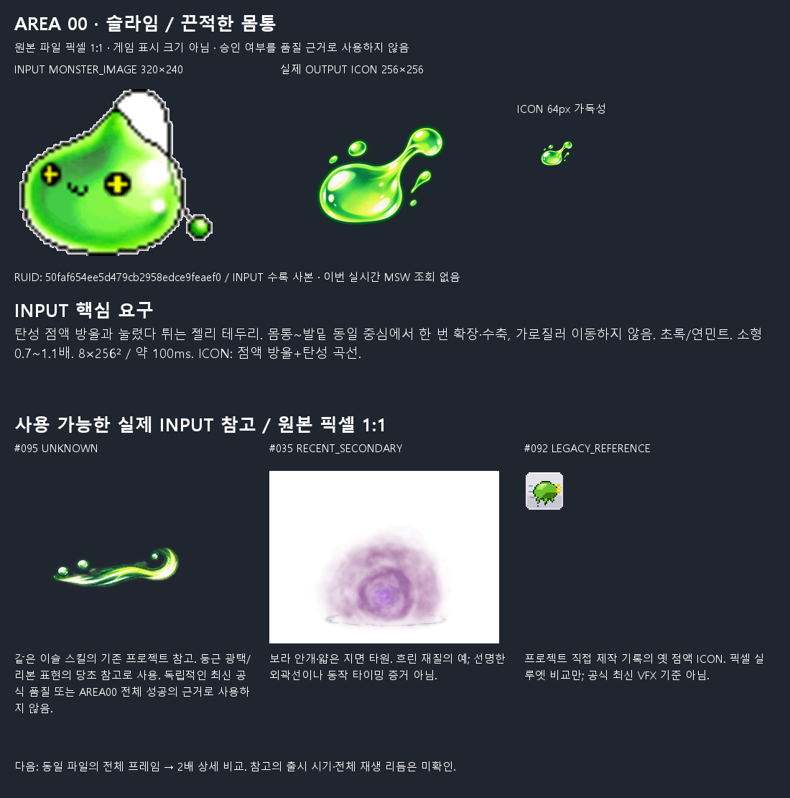

AREA 00은 원했던 디자인·마감을 구현했는가?
조건부 표현 참고로 사용 가능. 전체를 무조건적인 완성 품질 기준으로 확정하지 않음. 마노 F05~F07 파형 절단은 확정 결함이며, 재질 해석·끝맺음·자료 최신성의 한계가 남습니다. 사용자 승인/게임 동작 성공을 뜻하지 않습니다.
전체 보고서 · 문제/결정 목록 · 출처와 한계
원본 픽셀 1:1은 파일의 픽셀 크기입니다. 실제 게임 크기가 아닙니다. 아래 프레임 뷰어는 보간·이동·추가 fade 없이 기존 PNG만 표시합니다. INPUT의 약 100ms(마노 80ms) 간격은 런타임 타이밍 인증이 아닙니다.
달팽이 · 이슬 미끄럼길
SPEC_MISMATCH · 사용자 최종 승인 없음
m_snail / s_mon_snail_dew_trail
당초 요구
이슬 청록을 주색, 연두를 코어·잔상·소수 입자로 사용. 낮은 점액 띠가 오른쪽으로 늘어나며 물방울이 뒤따라 소멸. 다중 접촉광. 중간 규모 1.2~2배. 8×384² / 약 100ms. ICON: 큰 이슬방울+낮은 꼬리.
구현된 부분
F00~F03 낮은 띠의 연장, F04~F05 말림과 접촉성 섬광, F06 분절이 보인다. 둥근 물방울·점액 소재와 ICON의 큰 방울/꼬리가 대응한다. 균일 확대·축소만으로 만든 흐름은 아니다.
빠지거나 달라진 점 / 확인 한계
F03~F05의 연두·황백 강조가 강해 주색 청록보다 연두가 먼저 읽힐 수 있다. 다중 대상별 접촉광은 실제 대상·런타임 없이 구현 완료로 단정할 수 없다. F07은 줄어든 띠와 단단한 물방울이 남아 one-shot 종료 인상이 별도 판단 대상이다. 외곽85% 명세 대비 선명한 가로폭 초과: F03 86.5%, F05 87.5%. 잘림과 별개로 기술적 여백/배치 보정 후보이며 자동 재생성 사유로 확대하지 않음.
실제 참고와의 마감 비교
프로젝트 참고 #095의 어두운 청록 외곽·황백 리본·둥근 광택 방울과 가깝다. #178의 넓은 흰 흐름/푸른 반투명 겹과도 층 구분이 통한다. OUTPUT은 더 둥근 구슬과 매끈한 젤 광택에 무게를 둔다. #095는 독립적인 공식 최신 품질 근거가 아니다.
명세와 별개인 사용자 판단
청록 중심 문구와 연두가 강한 기존 #095 참고 사이에서 색 비중을 결정할 필요가 있다. 낮은 점액보다 보석/유리처럼 반짝이는 해석 및 마지막 방울의 잔존감을 유지할지 판단한다. 색이나 잔존량만으로 수정 확정하지 않는다.

보드가 화면 폭에 맞게 줄어들면 클릭하여 원본 픽셀 크기로 확인하세요. 아래 뷰어는 1:1 표시가 기본입니다.
F00
실제 VFX 전체 프레임 · 순서대로
2배 상세 비교

몬스터별 전체 비교 PNG · 원래 명세 전문
파란 달팽이 · 푸른 껍질
NEEDS_USER_REVIEW · 사용자 최종 승인 없음
m_blue_snail / s_mon_blue_snail
당초 요구
푸른 껍질 결을 겹친 반원 보호막과 짧은 반사광. 발밑~몸통 중심에서 아래→위로 감싸고 한 번 맥동한 뒤 같은 중심에서 소멸. 0.8~1.2배. 8×256² / 약 100ms. ICON: 푸른 껍질 아치+흰 반사광.
구현된 부분
F00~F02 열린 낮은 곡선이 올라오고 F03~F05 돔·나선 보호막을 이룬 뒤 F06~F07 분해된다. 닫힌 자기 보호 형태와 파랑/백청 반사광이 읽힌다. ICON의 나선 껍질이 VFX의 돔·나선과 연결된다.
빠지거나 달라진 점 / 확인 한계
VFX는 단단한 껍질 판보다 물막·액체 곡선에 가깝고 ICON은 더 단단하고 매끈한 구체 껍질이다. 결 모티브는 있으므로 소재 누락으로 단정하지 않는다. 마지막 곡선과 방울의 밝은 잔존감은 종료 인상 확인 대상이다.
실제 참고와의 마감 비교
#178의 푸른 반투명 층과 흰 곡선이 실질적인 보조 비교점이다. #100은 밝은 중심/유색 외곽의 층 구분만 비교 가능하며 각진 수정 판의 재질을 껍질에 강요할 수 없다. 기존 프로젝트 ICON #094의 픽셀·짙은 경계보다 새 ICON은 부드러운 그라데이션과 넓은 흰 반사면을 쓴다.
명세와 별개인 사용자 판단
단단한 방어 껍질을 물 같은 보호막으로 번역한 정도, ICON과 VFX의 고체/액체 차이를 허용할지 판단한다. 고정 중심의 정확한 게임 부착점은 미확인이다.

보드가 화면 폭에 맞게 줄어들면 클릭하여 원본 픽셀 크기로 확인하세요. 아래 뷰어는 1:1 표시가 기본입니다.
F00
실제 VFX 전체 프레임 · 순서대로
2배 상세 비교

몬스터별 전체 비교 PNG · 원래 명세 전문
빨간 달팽이 · 붉은 껍질 돌진
NO_OBVIOUS_ISSUE · 사용자 최종 승인 없음
m_red_snail / s_mon_red_snail
당초 요구
적색 껍질 원반을 앞으로 압축하고 오른쪽 돌진 잔상→앞쪽 충돌→분산 소멸. 주 적색/보조 주황. 타격광은 대상 중심을 가리지 않는 외곽 중심. 소형 0.7~1.1배. 8×256² / 약 100ms. ICON: 원반+속도선.
구현된 부분
F00~F03 적색 나선 원반과 왼쪽 잔상으로 오른쪽 추진을 표현한다. F04~F05 앞쪽 섬광, F06 곡선 조각, F07 작은 잔여 입자로 변한다. ICON의 원반·속도선·전방 타격광도 같은 동작을 요약한다.
빠지거나 달라진 점 / 확인 한계
확정적인 핵심 소재·방향 누락은 관찰되지 않았다. 충돌광이 실제 대상 중심을 가리지 않는지, 시전자의 실제 돌진과 중복 이동하는지는 정지 납품물만으로 검증할 수 없다. F03 왼쪽 끝 희박한 알파 접촉은 마노의 강한 파형 절단과 같은 수준으로 분류하지 않았다.
실제 참고와의 마감 비교
#067의 날카로운 밝기 전환/가늘어진 에너지 선, #084의 주황 섬광과 연무 분리와 비교했다. OUTPUT은 검은 연기·기계 부분을 복제하지 않고 붉은 둥근 껍질과 매끈한 불빛 잔상으로 번역한다. ICON의 선명한 외곽과 VFX의 부드러운 잔상 차이는 역할상 설명 가능하다.
명세와 별개인 사용자 판단
껍질이 불꽃성 에너지처럼 보이는 주황 외곽 강도를 유지할지는 취향 영역이다. INPUT이 주황 타격광을 허용하므로 화염 기능을 추가했다고 단정하지 않는다.

보드가 화면 폭에 맞게 줄어들면 클릭하여 원본 픽셀 크기로 확인하세요. 아래 뷰어는 1:1 표시가 기본입니다.
F00
실제 VFX 전체 프레임 · 순서대로
2배 상세 비교

몬스터별 전체 비교 PNG · 원래 명세 전문
마노 · 마노의 무지개 파동
SPEC_MISMATCH · 사용자 최종 승인 없음
m_mano / s_mon_mano
당초 요구
진주빛 껍질 고리와 낮은 무지개 파동. 지면 중심에서 방사형/상향 발현 후 바깥 입자로 소멸. 중앙 타격광과 외곽 경계 분리. 보스 2~3배 허용. 안전영역 핵심 70%, 외곽 85%. 12×512² / 약 80ms. ICON: 진주 껍질 고리+무지개 파문.
구현된 부분
진주 구슬, 부채꼴 껍질 결, 청록·분홍의 낮은 타원 파동이 F00~F07에서 형성된다. F06의 상향 빛은 명세의 상향 발현 허용 범위다. F08~F11은 고리 분절과 축소를 보인다. ICON과 VFX의 진주·껍질·파문이 잘 연결된다.
빠지거나 달라진 점 / 확인 한계
F05 오른쪽, F06 양쪽, F07 왼쪽의 밝은 파형이 캔버스 경계에 닿아 잘린다. 85% 안전영역도 벗어난다. 이는 보스 규모 허용과 별개인 구체적 파일/배치 결함이다. F03→F04에서 지면 고리와 중심이 위로 옮겨 읽히며 고정 지면 중심과의 관계를 확인해야 한다. F11에도 구슬·별·큰 고리 조각이 남는다. 외곽85% 명세 대비 선명한 가로폭 초과: F05 94.7%, F06 100.0%, F07 97.1%, F08 89.5%, F09 86.1%. 잘림과 별개로 기술적 여백/배치 보정 후보이며 자동 재생성 사유로 확대하지 않음.
실제 참고와의 마감 비교
#100/#101의 유색 층·흰 중심·외곽 무늬와 밝기 층 구분은 통한다. OUTPUT은 평면 수정판의 각진 분할 대신 진주·조개에 맞는 곡면 반사와 연속 무지개를 쓴다. #095의 둥근 광택과도 이어진다. 보스의 더 많은 층과 높은 밀도 자체는 마감 이탈이 아니다.
명세와 별개인 사용자 판단
조개/장신구 같은 진주 표현과 매우 밝은 중앙광이 의도한 마노 스킬로 적절한지 판단한다. F03→F04 위치 변화가 연출인지 중심 흔들림인지 확인할 필요가 있다. 경계 잘림은 이 취향 판단과 분리해 수정 후보로 남긴다.

보드가 화면 폭에 맞게 줄어들면 클릭하여 원본 픽셀 크기로 확인하세요. 아래 뷰어는 1:1 표시가 기본입니다.
F00
실제 VFX 전체 프레임 · 순서대로
2배 상세 비교

몬스터별 전체 비교 PNG · 원래 명세 전문
슬라임 · 끈적한 몸통
SPEC_MISMATCH · 사용자 최종 승인 없음
m_slime / s_mon_slime
당초 요구
탄성 점액 방울과 눌렸다 튀는 젤리 테두리. 몸통~발밑 동일 중심에서 한 번 확장·수축, 가로질러 이동하지 않음. 초록/연민트. 소형 0.7~1.1배. 8×256² / 약 100ms. ICON: 점액 방울+탄성 곡선.
구현된 부분
F00~F03 젤 덩어리가 퍼지고 팔처럼 휘는 점액 가장자리가 나온다. F04 별 모양 발현 뒤 F05~F06 구체·곡선으로 재조립/수축한다. 눈·입 등 몬스터 본체는 없다. ICON의 늘어나는 초록 방울이 탄성 소재를 요약한다.
빠지거나 달라진 점 / 확인 한계
F07이 작은 온전한 젤 덩어리로 돌아가므로 분해되어 사라짐보다 복원·반복 시작처럼 읽힐 수 있다. 전체 알파 면적은 절정보다 줄어들어 fade가 전혀 없다고 할 수는 없다. 비어 있는 마지막 프레임을 요구하지 않는다. 외곽85% 명세 대비 선명한 가로폭 초과: F03 90.6%, F04 85.9%. 잘림과 별개로 기술적 여백/배치 보정 후보이며 자동 재생성 사유로 확대하지 않음.
실제 참고와의 마감 비교
#095 프로젝트 이슬의 둥근 반사 방울과 광택 리본이 가장 직접적인 마감 비교점이다. #035의 안개성 반투명은 다른 재질의 예이며 슬라임을 흐린 연기로 만들 기준이 아니다. 프로젝트 옛 ICON #092보다 새 ICON은 명암이 연속적이고 유리처럼 광택이 강하다.
명세와 별개인 사용자 판단
끈적한 젤리보다 보석 같은 유동 방울에 가까운 광택, 폭발 후 온전한 덩어리로 복원되는 종료 인상을 유지할지 판단한다. 명시된 탄성 확장·수축은 있어 동작 전체 누락으로 분류하지 않는다.

보드가 화면 폭에 맞게 줄어들면 클릭하여 원본 픽셀 크기로 확인하세요. 아래 뷰어는 1:1 표시가 기본입니다.
F00
실제 VFX 전체 프레임 · 순서대로
2배 상세 비교
몬스터별 전체 비교 PNG · 원래 명세 전문
확정 결함 확대
추가 안전여백 차이: 절단3개와 중복되는 총9프레임
추가 비절단 여백/배치 보정 후보는6프레임. 원화 생성 필요와 구분합니다.
원본 ZIP/PNG/게임 파일 변경 없음. 다른 Area의 수정·생성은 시작하지 않았습니다.